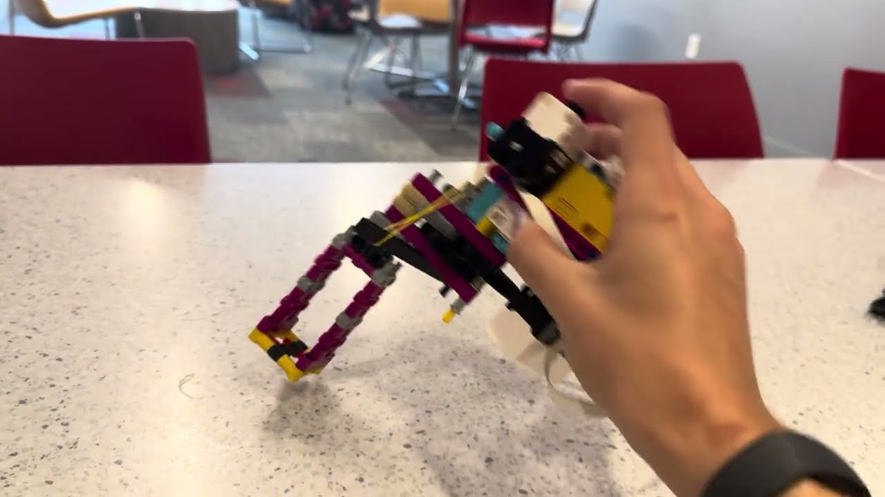

In this in-class activity we brainstormed different kinds of inputs for our robots. Project 8: Astronaut Tools needs inputs to control its motors (the output), so the task was to use AI to help write code that reads one input and uses it to control a motor, then test the code and document it.
I used the Distance Sensor and attached it to my Project 8 drill for the demonstration. The medium motor that spins the drill is on port A, and the Distance Sensor is on port C, aimed down at the surface below. The closer the drill gets, the slower it spins.
The program checks the distance, sets the motor speed, waits 50 milliseconds, and repeats. Two distance thresholds pick one of three speeds: 1000 degrees per second when the surface is more than 200 mm away, 500 between 100 and 200 mm, and 200 at 100 mm or closer. If the sensor doesn't get a valid reading it returns -1, and the program stops the motor. So the input controls both the motor's speed and whether it is on or off, while the direction stays the same. The video below shows the drill speeding up and slowing down as I move it away from and toward the table.
# Setup: medium motor on port A and Distance Sensor on port C,
# aimed at the ground.
from hub import port
import runloop
import motor
import distance_sensor
SLOW_SPEED = 200 # Motor speed when the ground is close.
MEDIUM_SPEED = 500 # Motor speed at a medium distance.
FAST_SPEED = 1000 # Motor speed when the ground is farther away.
SLOW_DISTANCE_MM = 100 # Distance threshold for slow speed.
MEDIUM_DISTANCE_MM = 200 # Distance threshold for medium speed.
async def main():
# Keep checking the distance and adjusting the motor.
while True:
ground_distance = distance_sensor.distance(port.C)
# Stop if the sensor does not have a valid distance reading.
if ground_distance == -1:
motor.stop(port.A)
# Use slower speeds when the ground is closer.
elif ground_distance <= SLOW_DISTANCE_MM:
motor.run(port.A, SLOW_SPEED)
elif ground_distance <= MEDIUM_DISTANCE_MM:
motor.run(port.A, MEDIUM_SPEED)
else:
motor.run(port.A, FAST_SPEED)
# Pause briefly before checking the distance again.
await runloop.sleep_ms(50)
runloop.run(main())